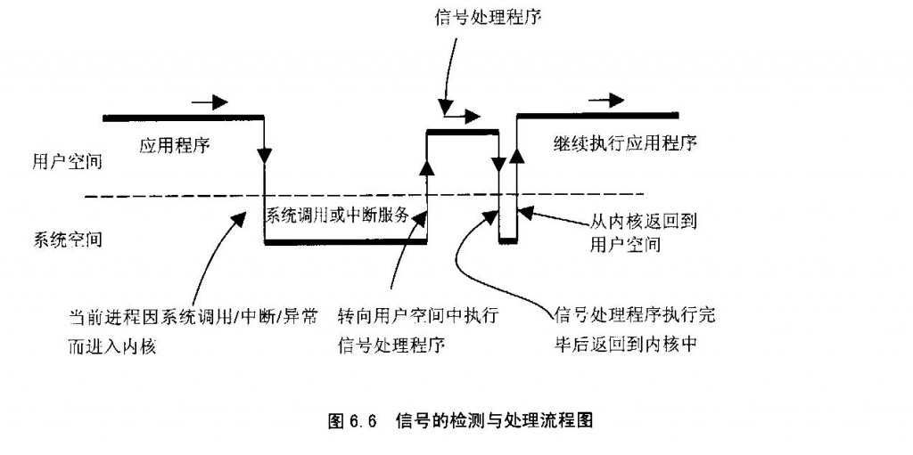
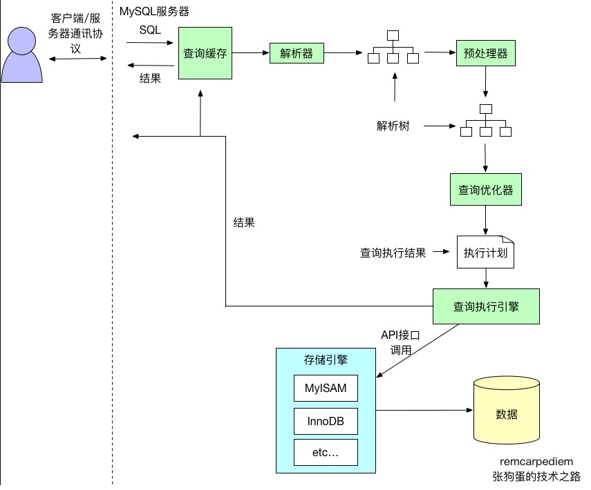

summary
一.业务概况：
头条的tob业务线，初期定位在效率工程部，愿景是以字节跳动(今日头条)为试验对象，以管理理念为思想，以创建和选购效率工具及服务为手段，促进公司的运营效率，改善员工工作体验。同时也准备将我们的系统和工具推向业界其他公司，帮助其他企业成长。目前重点在做的产品，就是类似于Slack的企业IM产品。该部门年初30人，目前北京深圳上海武汉四地一共150人，计划明年要到500人的规模。是目前集团的战略项目。
二. 吸引力：
- 最有效率的团队，不断探索工作方法、管理流程、工具系统等方面的改进，成为公司效率楷模；
- 更可控的应用环境让你的技术尝试可以更加激进，使用 0.1 版的项目在头条团队并不稀奇；
- 尝试全栈的机会：你不仅可以在技术上打通前后端，你甚至可以做自己的产品经理，直接为用户需求服务！
- 快速增长的公司，巨大的发展机会；高新待遇、六险一金，高薪期权，弹性工作，免费三餐、租房补贴，你，值得拥有！
三 面试参考题：
我们之前有候选人去面谈过，总结的一些经验，仅供参考，请勿外传，谢谢啦~~
基础知识题
HTTP 协议
请说明 HTTP 状态码 301、302、304 的作用（1 分钟）。
详细来说，301和302状态码都表示重定向
共同点： 就是说浏览器在拿到服务器返回的这个状态码后会自动跳转到一个新的URL地址，这个地址可以从响应的Location首部中获取（用户看到的效果就是他输入的地址A瞬间变成了另一个地址B）
不同点： 301表示旧地址A的资源已经被永久地移除了（这个资源不可访问了），搜索引擎在抓取新内容的同时也将旧的网址交换为重定向之后的网址； 302表示旧地址A的资源还在（仍然可以访问），这个重定向只是临时地从旧地址A跳转到地址B，搜索引擎会抓取新的内容而保存旧的网址。
301 重定向是网页更改地址后对搜索引擎友好的最好方法，只要不是暂时搬移的情况,都建议使用301来做转址。
| 状态码 |
含义 |
备注 |
| 301 |
301 redirect: 301 代表永久性转移(Permanently Moved)
请求一次后，服务器告诉客户端浏览器，永久重定向，下次再请求网页时不再请求远端服务器，客户端浏览器缓存了重定向的目标地址，但是，如果浏览器清空缓存后，浏览器重定向将失效，需要再次请求服务器。 |
| 302 |
302 redirect: 302 代表暂时性转移(Temporarily Moved )
每次客户端浏览器都需要请求服务器，服务器返回302，客户端浏览器，再根据响应头，请求相应的URL |
| 304 |
内容未改变，在请求头里有：If-Modified-Since，在响应头里有：Last-Modified |
2、请实现一个分布式 session（3 分钟）。
TODO
数据库
1、实现一个基于数据库的乐观锁？（3 分钟）
2、 一个表 t，有 a、b 两列，典型查询： （2 分钟）
- select * from t where a = xxx?
- select * from t where b = xxx?
- select * from t where a > xxx and b = yyy?
- 如何设计合理的索引？
如果一个查询语句的索引是三星索引，那么它只需要进行一次磁盘的随机读及一个窄索引片的顺序扫描就可以得到全部的结果集
- 第一颗星需要取出所有等值谓词中的列，作为索引开头的最开始的列（任意顺序）；
第一颗星不只是将等值谓词的列加入索引，它的作用是减少索引片的大小以减少需要扫描的数据行； - 第二颗星需要将 ORDER BY 列加入索引中；
第二颗星用于避免排序，减少磁盘 IO 和内存的使用； - 第三颗星需要将查询语句剩余的列全部加入到索引中；
第三颗星用于避免每一个索引对应的数据行都需要进行一次随机 IO 从聚集索引中读取剩余的数据；
存储
请设计方案存储群聊天的消息被哪些群成员读过的状态。 （5 分钟）
- 需要记录每条消息发送时群里面每个成员的已读状态，如：消息发送时群里面有 100 个人
，则只需记录这 100 个人的已读状态，不论以后人数怎么变化； - 消息和用户的 ID 类型都是64位整数；
缓存
有一个按创建时间已经排好序的列表，按 offset+ count 来取，需要使用缓存，请选择合适的NoSQL 缓存组件并阐述原因。（2 分钟）
安全
请阐述如何防范 CSRF 攻击？（2 分钟）
标准
请阐述 OAuth2.0 的『授权码模式』授权流程。（1 分钟）
需求实现题
在今日头条客户端看新闻的同时，还可以通过评论功能和网友进行交流：
- 你可以向自己的好友分享对新闻时事的观点，如果在浏览评论的过程中，发现自己好友的评论被优
先展示会是一件很美妙的事情，你可以立即与他的观点互动。 - 你通过『赞』这个动作来支持网友发表的评论，作为奖励，得到『赞』多的评论将会优先展示。
- 新发表的评论会比旧评论优先展示。
综合需求 1、2、3，请 分别展示 好友的评论、最热（赞最多）的 20 条评论、以及按发表时间倒序展
示。
请设计数据结构和相应算法，实现上述需求，并阐明原因（综合考虑时间、空间影响）。
一些背景： - 以阅兵报道为例，单篇文章阅读 3000 万次，每次阅读都会展示评论，总评论数超过 10 万条，最热
评论超过 3 万人赞。 - 每个人的好友数控制在 2000 内。
- 评论始终在变化，新增或删除。
请指明所用数据结构的空间复杂度和时间复杂度，及方案的优缺点。
提示： - 设计的数据结构需支持 多篇 新闻的评论。
- 本题 不考察 数据库表结构设计、缓存设计等内容，可认为你需要设计的数据结构均所有数据均
存储在内存中，它是一种索引。 - 数据结构是指数据结构及储存它们的容?，如：数组、链表等，为方便表述，可采用 stl 容?
（如：vector、map）等表达。 - 可认为已经有个 RPC 接口，它接受 user_id 作为参数，返回这个用户的好友 id 列表。
| 特性 |
描述 |
| 原子性（Atomicity） |
事务包含的所有操作要么全部成功，要么全部失败回滚；
成功必须要完全应用到数据库，失败则不能对数据库产生影响； |
| 一致性（Consistency） |
事务执行前和执行后必须处于一致性状态 |
| 隔离性（Isolation） |
当多个用户并发访问数据库时，数据库为每一个用户开启的事务，不被其他事务的操作所干扰，多个并发事务之间要相互隔离； |
| 持久性（Durability） |
一个事务一旦被提交了，那么对数据库中的数据的改变就是永久性的，即便在数据库系统遇到故障的情况下也不会丢失事物的操作。 |
- mysql 的隔离级别有哪些
| 隔离级别 |
描述 |
特性 |
| READ UNCIMMITTED（读未提交） |
事务中的修改，即使没有提交，其他事务也可以看得到，比如说上面的两步这种现象就叫做脏读 |
最低级别，任何情况都会发生。 |
| READ COMMITTED（读已提交） |
大多数数据库系统的默认隔离级别是READ COMMITTED，这种隔离级别就是一个事务的开始，只能看到已经完成的事务的结果，正在执行的，是无法被其他事务看到的。这种级别会出现读取旧数据的现象 |
可避免脏读的发生。 |
| Repeatable read(可重复读) |
REPEATABLE READ解决了脏读的问题，该级别保证了每行的记录的结果是一致的，也就是上面说的读了旧数据的问题，但是却无法解决另一个问题，幻行，顾名思义就是突然蹦出来的行数据。指的就是某个事务在读取某个范围的数据，但是另一个事务又向这个范围的数据去插入数据，导致多次读取的时候，数据的行数不一致。 |
可避免脏读、不可重复读的发生。 |
| Serializable(串行化) |
SERIALIZABLE是最高的隔离级别，它通过强制事务串行执行（注意是串行），避免了前面的幻读情况，由于他大量加上锁，导致大量的请求超时，因此性能会比较底下，再特别需要数据一致性且并发量不需要那么大的时候才可能考虑这个隔离级别 |
避免脏读、不可重复读，幻读的发生。 |
- 不同隔离级别产生的问题
| 问题 |
解释 |
| 脏读 |
是指一个事务处理过程里读取了另一个未提交的事务中的数据，然后使用了这个数据； |
| 不可重复读 |
不可重复读是指在一个事务内，多次读取同一个数据，在这个事务还没有结束 ，另一个事务也访问该同一数据，但是由于第二个事务的修改，那么第一个事务两次读取的数据可能不一样，因此称为不可重复读；即同一个事务中原始数据读取不可重复。 |
| 幻读 |
当事务不是独立执行时发生的一种现象，
例如：第一个事务对一个表中的数据进行修改，这种数据涉及到表中的全部数据行，同时，第二个事务也对这个表数据进行修改，这个修改是对表中新增/删除一条数据，那么操作第一个事务的用户发现表中的数据还没有修改的数据行，就好像发生了幻觉一样，这就是发生了幻读。 |
注:幻读和不可重复读都读取另一条已经提交的事务，所不同的是不可重复读查询的都是同一数据项，而幻读针对的是一批数据整体。
| 隔离级别 |
脏读 |
不可重复读 |
幻读 |
| READ-UNCOMMITTED |
✔ |
✔ |
✔ |
| READ-COMMITTED |
✖ |
✔ |
✔ |
| REPEATABLE-READ |
✖ |
✖ |
✔ |
| SERIALIZABLE |
✖ |
✖ |
✖ |
MVVC(Multi Version Concurrency Control多版本并发控制)
- MySQL中的InnoDB存储引擎的特性有，默认隔离级别REPEATABLE READ, 行级锁，实现了MVCC, Consistent nonlocking read(默认读不加锁，一致性非锁定读), Insert Buffer, Adaptive Hash Index, DoubleWrite, Cluster Index。
- Redo log, bin log, Undo log
MySQL Innodb中存在多种日志，除了错误日志、查询日志外，还有很多和数据持久性、一致性有关的日志。
4、B树的原理
- 定义:
- 根结点至少有两个子女。
- 每个中间节点都包含k-1个元素和k个孩子，其中 m/2 <= k <= m
- 每一个叶子节点都包含k-1个元素，其中 m/2 <= k <= m
- 所有的叶子结点都位于同一层。
- 每个节点中的元素从小到大排列，节点当中k-1个元素正好是k个孩子包含的元素的值域分划。
5、堆排序的插入复杂度，数据结构是怎样的
6、redis有哪些接口
7、简单介绍项目
8、python的协程概念
9、elasticsearch的master节点选举算法
10、用过哪些分布式消息队列，kafka的架构？offset如果管理？如何保证消息的顺序性？
11、https的原理
12、xss攻击
13、cookie、session概念
14、select和epoll的区别
select优化点：
（1）被监控的fds集合限制为1024，1024太小了，我们希望能够有个比较大的可监控fds集合
（2）fds集合需要从用户空间拷贝到内核空间的问题，我们希望不需要拷贝
（3）当被监控的fds中某些有数据可读的时候，我们希望通知更加精细一点，就是我们希望能够从通知中得到有可读事件的fds列表，而不是需要遍历整个fds来收集。
epoll相较于select高效在什么地方，需要比较两者做相同事情的方法
- 用户态怎样将文件句柄传到内核态？
- select创建3个文件描述符集，并将这些文件描述符拷贝到内核中，这里限制了文件句柄的最大的数量为1024（注意是全部传入—-第一次拷贝）；
- 首先执行epoll_create在内核专属于epoll的高速cache区，并在该缓冲区建立红黑树和就绪链表，用户态传入的文件句柄将被放到红黑树中（第一次拷贝）。
- 内核态怎么判断I/O流可读写？
- 内核针对读缓冲区和写缓冲区来判断是否可读可写,这个动作和select无关；
- 内核针对读缓冲区和写缓冲区来判断是否可读可写，这个动作与epoll无关；
- 内核怎么通知监控者有I/O流可读写？
- 内核在检测到文件句柄可读/可写时就产生中断通知监控者select，select被内核触发之后，就返回可读可写的文件句柄的总数；
- epoll_ctl执行add动作时除了将文件句柄放到红黑树上之外，还向内核注册了该文件句柄的回调函数，内核在检测到某句柄可读可写时则调用该回调函数，回调函数将文件句柄放到就绪链表。
- 监控者如何找到可读写的I/O流并传递给用户态程序？
- select会将之前传递给内核的文件句柄再次从内核传到用户态（第2次拷贝），select返回给用户态的只是可读可写的文件句柄总数，再使用FD_ISSET宏函数来检测哪些文件I/O可读可写（遍历）；
- epoll_wait只监控就绪链表就可以，如果就绪链表有文件句柄，则表示该文件句柄可读可写，并返回到用户态（少量的拷贝）；
- 继续循环监控时，监控者怎样重复上述步骤？
- select对于事件的监控是建立在内核的修改之上的，也就是说经过一次监控之后，内核会修改位，因此再次监控时需要再次从用户态向内核态进行拷贝（第N次拷贝）
- 由于内核不修改文件句柄的位，因此只需要在第一次传入就可以重复监控，直到使用epoll_ctl删除，否则不需要重新传入，因此无多次拷贝。
epoll是继承了select/poll的I/O复用的思想，并在二者的基础上从监控IO流、查找I/O事件等角度来提高效率，具体地说就是内核句柄列表、红黑树、就绪list链表来实现的。 epoll高效的本质: 1.减少用户态和内核态之间的文件句柄拷贝； 2.减少对可读可写文件句柄的遍历；
水平触发与边缘触发
- 水平触发(level-trggered)
- 只要文件描述符关联的读内核缓冲区非空，有数据可以读取，就一直发出可读信号进行通知，
- 当文件描述符关联的内核写缓冲区不满，有空间可以写入，就一直发出可写信号进行通知
- 边缘触发(edge-triggered)
- 当文件描述符关联的读内核缓冲区由空转化为非空的时候，则发出可读信号进行通知，
- 当文件描述符关联的内核写缓冲区由满转化为不满的时候，则发出可写信号进行通知
epoll不足
- 它不能在单次系统调用中多次更新兴趣集。当你的兴趣集中有100个文件描述符需要更新状态时，你不得不调用100次epoll_ctl()函数。
- 非文件类型支持， “在unix中，所有东西都是文件”。但并不总是这样。例如时钟就不是，信号也不是，信号量也不是，包括进程也不是。无法对这些事物采用select()/poll()/epoll()的事件复用技术。为了避免这个问题，Linux提供了很多补充性质的系统调用，如signalfd()，eventfd()和timerfd_create()来转换非文件类型到文件描述符，这样你就可以使用epoll了。
- 磁盘文件支持，epoll并不支持所有的文件描述符；select()/poll()/epoll()不能工作在常规的磁盘文件上。这是因为epoll有一个强烈基于准备就绪模型的假设前提。你监视的是准备就绪的套接字，因此套接字上的顺序IO调用不会发生阻塞。但是磁盘文件并不符合这种模型，因为它们总是处于就绪状态。
15、redis持久化
| 方式 |
命令 |
解释 |
优点 |
缺点 |
| RDB持久化（快照） |
save: save命令会阻塞Redis服务器进程，直到RDB文件创建完毕为止，在Redis服务器阻塞期间，服务器不能处理任何命令请求
bgsave: 1. 服务器进程pid为1349派生出一个pid为1357的子进程，
2. 子进程将数据写入到一个临时 RDB文件中
3. 当子进程完成对新 RDB 文件的写入时，Redis 用新 RDB 文件替换原来的 RDB 文件，并删除旧的 RDB 文件。
自动保存: save 900 1 # 900 秒内有至少有 1 个键被改动
save 300 10 # 300 秒内有至少有 10 个键被改动
save 60 10000 # 60 秒内有至少有 1000 个键被改动 |
RDB持久化是指在客户端输入save、bgsave或者达到配置文件自动保存快照条件时，将Redis 在内存中的数据生成快照保存在名字为 dump.rdb（文件名可修改）的二进制文件中。 |
1. RDB是一个非常紧凑（有压缩）的文件,它保存了某个时间点的数据,非常适用于数据的备份。
2. RDB作为一个非常紧凑（有压缩）的文件，可以很方便传送到另一个远端数据中心 ，非常适用于灾难恢复.
3. RDB在保存RDB文件时父进程唯一需要做的就是fork出一个子进程,接下来的工作全部由子进程来做，父进程不需要再做其他IO操作，所以RDB持久化方式可以最大化redis的性能.
4. 与AOF相比,在恢复大的数据集的时候，RDB方式会更快一些. |
1. Redis意外宕机 时，会丢失部分数据
2. 当Redis数据量比较大时，fork的过程是非常耗时的，fork子进程时是会阻塞的，在这期间Redis 是不能响应客户端的请求的。 |
| AOF持久化（只追加操作的文件 Append-only file） |
|
AOF持久化是通过保存Redis服务器所执行的写命令来记录数据库状态，也就是每当 Redis 执行一个改变数据集的命令时（比如 SET）， 这个命令就会被追加到 AOF 文件的末尾。 |
1. 使用AOF会让你的Redis更加持久化
2. AOF文件是一个只进行追加的日志文件，不需要在写入时读取文件。
3. Redis 可以在 AOF 文件体积变得过大时，自动地在后台对 AOF 进行重写 。
4. AOF文件可读性高，分析容易 |
- ctrl+c原理：
- 信号是异步的，一个进程不可能等待信号的到来，也不知道信号会到来，那么，进程是如何发现和接受信号呢？
- 实际上，信号的接收不是由用户进程来完成的，而是由内核代理。当一个进程P2向另一个进程P1发送信号后，内核接受到信号，并将其放在P1的信号队列当中。当P1再次陷入内核态时，会检查信号队列，并根据相应的信号调取相应的信号处理函数。
- 刚才我们说，当P1再次陷入内核时，会检查信号队列。那么，P1什么时候会再次陷入内核呢？陷入内核后在什么时机会检测信号队列呢？
- 当前进程由于系统调用、中断或异常而进入系统空间以后，从系统空间返回到用户空间的前夕。
- 当前进程在内核中进入睡眠以后刚被唤醒的时候（必定是在系统调用中），或者由于不可忽略信号的存在而提前返回到用户空间。
- 进入信号处理函数
发现信号后，根据信号向量，知道了处理函数，那么该如何进入信号处理程序，又该如何返回呢？ 我们知道，用户进程提供的信号处理函数是在用户态里的，而我们发现信号，找到信号处理函数的时刻处于内核态中，所以我们需要从内核态跑到用户态去执行信号处理程序，执行完毕后还要返回内核态。这个过程如下图所示：

如图，处理信号的整个过程是这样的：进程由于系统调用或者中断进入内核，完成相应任务返回用户空间的前夕，检查信号队列，如果有信号，则根据信号向量表找到信号处理函数，设置好“frame”后，跳到用户态执行信号处理函数。信号处理函数执行完毕后，返回内核态，设置“frame”，再返回到用户态继续执行程序。 - 什么叫Frame？
- 在调用一个子程序时，堆栈要往下（逻辑意义上是往上）伸展，这是因为需要在堆栈中保存子程序的返回地址，还因为子程序往往有局部变量，也要占用堆栈中的空间。此外，调用子程序时的参数也是在堆栈中。子程序调用嵌套越深，则堆栈伸展的层次也越多。在堆栈中的每一个这样的层次，就称为一个”框架”，即frame。一般来说，当子程序和调用它的程序在同一空间中时，堆栈的伸展，也就是堆栈中框架的建立，过程主要如下：
call指令将返回地址压入堆栈（自动）
用push指令压入调用参数
调整堆栈指针来分配局部变量
- 过去自己觉得写的最优秀的架构
- 遇到过的最大技术挑战
总之，头条的面试非常细致，需要人选保持对技术的热情，所以提前准备一下比较好，把之前的项目经历梳理一遍，巩固一下算法
五. 头条用人风格及企业文化
关于头条的企业文化，主要有三点。
第一是“技术控，保持对技术持续的热爱”，最近有几个后端工程师参加他们的面试，通过面试题，能直接体会到确实很细，得有技术钻研精神才能时刻保持对那些问题的熟悉程度；
第二是“数据控”，做事情，都要有数据依据，拿数据说话，不能拍脑门决定；
第三是“始终创业”，永远如履薄冰，永远都是创业公司，内部不能官僚化，明文禁止有“xx总”、“哥”、“姐”等称谓，只能叫名字。
头条的招聘风格，首先就是技术过关，要很聪明的人，沟通能力强，认同企业文化，宁缺毋滥。
事实上，所有创业公司里面，人员平均素质最高的，恐怕就是头条了，而且头条的离职率很低。


高并发理解：
简要总结梳理下，7点：
逻辑剥离，只保留核心部分，而把附加功能剔除出去
生成订单、扣除资金、库存扣减。
非核心部分，短信发送、消息通知、销售统计、订单搜索等，通过MQ保证。
提高数据库事务并发
要提高数据库的事务并发数，最有效的办法是拆分，拆分有两种，一是对库进行拆分，另一种是在同一个库中对表进行拆分。
数据库写库，通常只有1个，为了保证数据绝对一致。
单个数据库的写库、并发性，有很大限制，通过分库16个、分表16*64=1024个。
分库分表依据，订单号后4位，取模%1024。
当当网开源的sharding-jdbc挺不错的。
买家和卖家2个维度
买家是1套库。 新增订单后，再发送MQ消息+定期对数据，同步到卖家库。
历史数据
3个月前的老数据迁移到其它库中。 用户查询时，分2次查询汇总。
全数据的统计
数据迁移到全量库中。难道是HBase之类的？
搜索
搜索和统计有点类似。 ElasticSearch。 京东淘宝都是10亿级别了吧。
其它优化
数据库、磁盘IO、服务器硬件稳定、压力测试
内存泄露分析
SQL执行流程
- 客户端发送一条查询给服务器。
- 服务器先检查查询缓存，如果命中了缓存，则立刻返回存储在缓存中的结果。否则进入下一阶段。
- 服务器端进行SQL解析、预处理，再由优化器生成对应的执行计划。
- MySQL根据优化器生成的执行计划，再调用存储引擎的API来执行查询。
- 将结果返回给客户端。

查询缓存
- MySQL查询缓存保存查询返回的完整结构。当查询命中该缓存时，MySQL会立刻返回结果，跳过了解析、优化和执行阶段。 查询缓存系统会跟踪查询中涉及的每个表，如果这些表发生了变化，那么和这个表相关的所有缓存数据都将失效。 MySQL将缓存存放在一个引用表中，通过一个哈希值引用，这个哈希值包括了以下因素，即查询本身、当前要查询的数据库、客户端协议的版本等一些其他可能影响返回结果的信息。 当判断缓存是否命中时，MySQL不会进行解析查询语句，而是直接使用SQL语句和客户端发送过来的其他原始信息。所以，任何字符上的不同，例如空格、注解等都会导致缓存的不命中。 当查询语句中有一些不确定的数据时，则不会被缓存。例如包含函数NOW()或者CURRENT_DATE()的查询不会缓存。包含任何用户自定义函数，存储函数，用户变量，临时表，mysql数据库中的系统表或者包含任何列级别权限的表，都不会被缓存。 有一点需要注意，MySQL并不是会因为查询中包含一个不确定的函数而不检查查询缓存，因为检查查询缓存之前，MySQL不会解析查询语句，所以也无法知道语句中是否有不确定的函数。 事实则是，如果查询语句中包含任何的不确定的函数，那么其查询结果不会被缓存，因为查询缓存中也无法找到对应的缓存结果。 缓存命中率可以通过如下公式计算：Qcache_hits/(Qcache_hits + Com_select)来计算。有关查询缓存的配置如下所示:
- query_cache_type:是否打开查询缓存。可以设置为OFF、ON和DEMAND。DEMAND表示只有在查询语句中明确写明SQL_CACHE的语句才会放入查询缓存。
- query_cache_size:查询缓存使用的总内存空间。
- query_cache_min_res_unit:在查询缓存中分配内存块时的最小单元。较小的该值可以减少碎片导致的内存空间浪费，但是会导致更频繁的内存块操作。
- query_cache_limit:MySQL能够查询的最大查询结果。如果查询结果大于这个值，则不会被缓存。因为查询缓存在数据生成的时候就开始尝试缓存数据，所以当结果全部返回后，MySQL才知道查询结果是否超出限制。超出之后，才会将结果从查询缓存中删除。
解析和预处理
- 解析器通过关键字将SQL语句进行解析，并生成对应的解析树。MySQL解析器将使用MySQL语法规则验证和解析查询。 预处理器则根据一些MySQL规则进行进一步检查解析书是否合法，例如检查数据表和数据列是否存在，还会解析名字和别名，看看它们是否有歧义。
查询优化器
- 查询优化器会将解析树转化成执行计划。一条查询可以有多种执行方法，最后都是返回相同结果。优化器的作用就是找到这其中最好的执行计划。 生成执行计划的过程会消耗较多的时间，特别是存在许多可选的执行计划时。如果在一条SQL语句执行的过程中将该语句对应的最终执行计划进行缓存，当相似的语句再次被输入服务器时，就可以直接使用已缓存的执行计划，从而跳过SQL语句生成执行计划的整个过程，进而可以提高语句的执行速度。

- MySQL使用基于成本的查询优化器(Cost-Based Optimizer，CBO)。它会尝试预测一个查询使用某种执行计划时的成本，并选择其中成本最少的一个。 优化器会根据优化规则对关系表达式进行转换，这里的转换是说一个关系表达式经过优化规则后会生成另外一个关系表达式，同时原有表达式也会保留，经过一系列转换后会生成多个执行计划，然后CBO会根据统计信息和代价模型(Cost Model)计算每个执行计划的Cost，从中挑选Cost最小的执行计划。由上可知，CBO中有两个依赖：统计信息和代价模型。统计信息的准确与否、代价模型的合理与否都会影响CBO选择最优计划。
查询执行引擎
- 解析和优化阶段，MySQL将生成查询对应的执行计划，MySQL的查询执行引擎根据这个执行计划来完成整个查询。这里执行计划是一个数据结构，而不是和其他的关系型数据库那样生成对应的字节码。
返回结果给客户端
- 如果查询可以被缓存，那么MySQL在这个阶段页会将结果存放到查询缓存中。MySQL将结果集返回给客户端是一个增量、逐步返回的过程。在查询生成第一条结果时，MySQL就可以开始向客户端逐步返回结果集了。